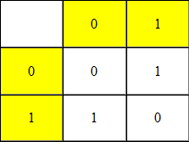
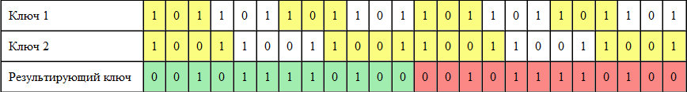

Сила в простотеПоговорим немного о приватности? Как часто тебе нужно передать какую-то важную цифровую информацию так, что бы быть уверенным, что никто ее не прочитает? В связи с наличием таких программ, как Эшелон и PRISM, это становится особенно актуально. Современный мир настойчиво диктует нам, что чем сложнее алгоритм, тем он лучше, но это не всегда так. Сегодня я попробую это доказать. Поможет мне в этом относительно малоизвестный криптографический алгоритм, применяемый на практике в основном шпионами и правительствами для передачи секретных данных. ТеорияИтак, немного теории: Говорить мы будем об одном из самых простых, но, в то же время, и об одном из самых стойких алгоритмов -- шифре Вернама: "Шифр Вернама (другое название: англ. One-time pad — схема одноразовых блокнотов) — в криптографии система
симметричного шифрования, изобретённая в 1917 году сотрудниками AT&T Мейджором Джозефом Моборном и Гилбертом Вернамом.
Шифр Вернама является системой шифрования, для которой доказана абсолютная криптографическая стойкость.
Википедия Для читателя, наверно, не секрет, что все, хранимое и обрабатываемое компьютером можно представить в виде чисел (т.к. компьютер, в переводе а английского -- тот, кто считает, предназначен преимущественно для математических расчетов) в двоичной системе счисления:
А теперь погорим о т.н. операции «исключающее ИЛИ». Проще всего описать ее с помощью небольшой таблицы, где по горизонтали будут отложены биты сообщения, а по вертикали -- ключа.  Таким образом, при применении Исключающего ИЛИ к открытому тексту 100111012 и ключу 101101112 получим шифротекст 001010102. Что бы расшифровать полученный шифротекст, применим к нему еще раз операцию исключающее ИЛИ и получим 100111012, т.е. наш открытый текст. Как видишь, идеи, заложенные в шифр Вернама, достаточно простые, реализовать их почти на любом современном ЯП можно за пару минут. Однако, возникает вопрос получения абсолютно случайного ключа и его передачи второй стороне. Но если отказаться от абсолютной случайности, все становится предельно просто, особенно в век социальных сетей:
Но не лишен такой подход и слабых сторон: ключевой недостаток шифра Вернама заключается в том, что длина ключа должна быть больше либо равна длине открытого текста, это некритично для небольших txt файлов, но даже маленький, но форматированный документ передать будет не так то уж и просто. Но есть решение и этой проблемы: использование нескольких ключей взаимно простой длины (т.е. их длины не должны иметь общих делителей, кроме 1, разумеется). Т.е. при использовании двух ключей (длинами 2048 и 2047 байт) у нас два варианта: добавить в конец первого второй ключ (а значит мы сможем зашифровать уже 4095 байт) либо сложить их с помощью все того же исключающего ИЛИ в ключ длинной 4192256 байт (что, согласитесь, неплохо, если эти ключи будут по примерно 25 кб, что примерно равно половине-четвертине обычной фотографии, мы получим ключ длинной в 655334400 байт, что позволит зашифровать документ размером чуть более 600 мб). Итак, как же можно сложить два ключа с помощью исключающего ИЛИ? Рассмотрим это на примере двух ключей по 3 и 4 бита: 1012 и 10012. Представим их как две "бесконечные"(по сути, закольцованные) ленты и будем постепенно прокручивать их и складывать с помощью исключающего ИЛИ в конечный ключ.  Как видишь, мы с помощью двух ключей динами n=3 и m=4 сгенерировали ключ длинной nm=12 битов. А теперь перейдем к практике. ПрактикаПисать я буду на питоне, т.к. это очень простой и выразительный язык, что бы читать программы на нем совсем не обязательно его знать. Итак, сначала нам понадобится т.н. лента: def string(data): n=0 while True: yield data[n] n+=1 n%=len(data) Ее задача предельно проста: при каждом запросе возвращать следующий элемент последовательности data, как только последовательность заканчивается -- происходит переход в начало и так до бесконечности. Что ж, теперь нам нужно превратить произвольный файл в две (можно и больше, но неизвестно, как это отразится на надежности) ленты и получить новую ленту нужной длины. def genKey(data,l): s1, s2= None, None if len(data)%2==0: data.pop(0) #выбрасываем первый символ, нам нужна нечетная длина #обычно это часть сигнатуры типа, одинаковой для всех файлов, #так что она нам только мешает m=int(len(data)/2) #середина нашего списка t1=(data[:m]) #в первую ленту пойдет все до нее t2=(data[m:]) #а во второю -- все остальное if len(t1)*len(t2)<l: raise Exception("Too small data to generate key") s1=string(t1) #создаем наши ленты s2=string(t2) # out=[] #пустой список for i in range(l): #цикл от 0 до l-1 out+=[next(s1)^next(s2)] #формируем массив, ^ обозначает исключающее ИЛИ return out Что бы убедиться в правильности запустим функцию таким образом: genKey([1,0,1,1,0,0,1],12) => [0, 0, 1, 0, 1, 1, 1, 1, 0, 1, 0, 0] После знака => находится ее вывод, который совпадает с значениями в моей последней таблице, просчитанной вручную. Значит функция работает правильно. Попробуем запросить ключ больше, чем это возможно: >>> genKey([1,0,1,1,0,0,1],13) Traceback (most recent call last): File "<pyshell#5>", line 1, in <module> genKey([1,0,1,1,0,0,1],13) File "[цензура] vernam.py", line 19, in genKey raise Exception("Too small data to generate key") Exception: Too small data to generate key И получим сообщение об ошибке, работает. Осталось только научиться шифровать файлы. В этом нам поможет следующая функция: def crypt(datafile, keyfile): data=open(datafile,"rb").read() key=open(keyfile,"rb").read() gamma=None try: gamma=genKey(key,len(data)) except: print("Ключевой файл слишком короткий для шифрования исходного файла.") return out=[data[i]^gamma[i] for i in range(len(data))] with open(datafile,"wb") as f: f.write(bytes(out)) С целью ее проверки был успешно зашифрован и расшифрован текст данной статьи (разумеется, копия), ключем выступал исходник нашего шифратора. В заключениеКак видишь, простой не значит слабый. Шифр Вернама уверенно укоренился в областях, требующих сверхсекретности, так почему бы и нам не воспользоваться опытом шпионов? Исходники: sources/FanOfGun/powerins
|